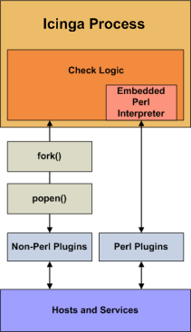

|
Introduction Icinga can be compiled with support for an embedded Perl interpreter. This allows Icinga to execute Perl plugins much more efficiently that it otherwise would, so it may be of interest to you if you rely heavily on plugins written in Perl. Without the embedded Perl interpreter, Icinga executes Perl (and non-Perl) plugins by forking and executing the plugins as an external command. When the embedded Perl interpreter is used, Icinga can execute Perl plugins by simply making a library call.
Stephen Davies contributed the original embedded Perl interpreter code several years back. Stanley Hopcroft has been the primary person helping to improve the embedded Perl interpreter code quite a bit and has commented on the advantages/disadvanges of using it. He has also given several helpful hints on creating Perl plugins that work properly with the embedded interpreter. It should be noted that "ePN", as used in this documentation, refers to embedded Perl Icinga, or if you prefer, Icinga compiled with an embedded Perl interpreter. |
 |
Some advantages of ePN (embedded Perl Icinga) include:
Icinga will spend much less time running your Perl plugins because it no longer forks to execute the plugin (each time loading the Perl interpreter). Instead, it executes your plugin by making a library call.
It greatly reduces the system impact of Perl plugins and/or allows you to run more checks with Perl plugin than you otherwise would be able to. In other words, you have less incentive to write plugins in other languages such as C/C++, or Expect/TCL, that are generally recognised to have development times at least an order of magnitude slower than Perl (although they do run about ten times faster also - TCL being an exception).
If you are not a C programmer, then you can still get a huge amount of mileage out of Icinga by letting Perl do all the heavy lifting without having Icinga slow right down. Note however, that the ePN will not speed up your plugin (apart from eliminating the interpreter load time). If you want fast plugins then consider Perl XSUBs (XS), or C after you are sure that your Perl is tuned and that you have a suitable algorithm (Benchmark.pm is invaluable for comparing the performance of Perl language elements).
Using the ePN is an excellent opportunity to learn more about Perl.
The disadvantages of ePN (embedded Perl Icinga) are much the same as Apache mod_perl (i.e. Apache with an embedded interpreter) compared to a plain Apache:
A Perl program that works fine with plain Icinga may not work with the ePN. You may have to modify your plugins to get them to work.
![[Important]](../images/important.png) |
Important |
|---|---|
|
Please note that you might introduce memory leaks so you shouldn't run your plugin without having tested/verified it using
|
Perl plugins are harder to debug under an ePN than under a plain Icinga.
Your ePN will have a larger SIZE (memory footprint) than a plain Icinga.
Some Perl constructs cannot be used or may behave differently than what you would expect.
You may have to be aware of 'more than one way to do it' and choose a way that seems less attractive or obvious.
You will need greater Perl knowledge (but nothing very esoteric or stuff about Perl internals - unless your plugin uses XSUBS).
If you want to use the embedded Perl interpreter to run your Perl plugins and scripts, here's what you'll need to do:
Compile Icinga with support for the embedded Perl interpreter (see instructions below).
Enable the enable_embedded_perl option in the main configuration file.
Set the use_embedded_perl_implicitly option to fit your needs. This option determines whether or not the Perl interpreter should be used by default for individual Perl plugins and scripts.
Optionally enable or disable certain Perl plugins and scripts from being run using the embedded Perl interpreter. This can be useful if certain Perl scripts have problems being running under the Perl interpreter. See instructions below for more information on doing this.
If you want to use the embedded Perl interpreter, you'll first need to compile Icinga with support for it. To do this, simply run the configure script with the addition of the --enable-embedded-perl option. If you want the embedded interpreter to cache internally compiled scripts, add the --with-perlcache option as well. Example:
./configure --enable-embedded-perl --with-perlcache otheroptions...
Once you've rerun the configure script with the new options, make sure to recompile Icinga.
Packagers might use another option to specify the location of the p1.pl file:
./configure --with-p1-file-dir=<path>
You can specify which Perl plugins or scripts should or should not be run under the embedded Perl interpreter. This is particularly useful if you have troublesome Perl scripts which do not work well with the Perl interpreter.
To explicitly tell Icinga whether or not to use the embedded Perl interpreter for a particular perl script, add one of the following entries to your Perl script/plugin...
To tell Icinga to use the Perl interpreter for a particular script, add this line to the Perl script:
# icinga: +epn
To tell Icinga to NOT use the embedded Perl interpreter for a particular script, add this line to the Perl script:
# icinga: -epn
Either line must be located within the first 10 lines of a script for Icinga to detect it.
![[Tip]](../images/tip.png) |
Tip |
|---|---|
|
If you do not explicitly use the method above to tell Icinga whether an individual plugin can be run under the Perl interpreter, Icinga will make will a decision for you. This decision process is controlled by the use_embedded_perl_implicitly variable. If the value is set to 1, all Perl plugins/scripts (that do not explicitly enable/disable the ePN) will be run under the Perl interpreter. If the value is 0, they will NOT be run under the Perl interpreter. |
Information on developing plugins for use with the embedded Perl interpreter can be found here.
© 1999-2009 Ethan Galstad, 2009-2017 Icinga Development Team, https://www.icinga.com